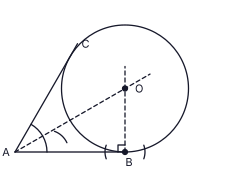

Part A: 2 marks per question (1 mark for the correct method, 1 mark for the correct answer). Total 50 marks.
Part B: 10 marks per question. Total 50 marks. The marks for each step are given in the right-hand column.
Give full marks for correct alternative methods. Accept reasonable readings from graphs and constructions (e.g. ± half a small square).
Part A — Answers
1. Work = 12 × 20 = 240 worker-days; workers needed for 15 days = 240 ÷ 15 = 16; extra workers = 16 − 12
Final answer: 4 workers
(2 marks)
2. Draw a line through E parallel to AB (and CD): AÊC = BÂE + EĈD (alternate angles); BÂE = 95° − 40°
Final answer: 55°
(2 marks)
3. LCM = 12x: 10 + 9 − 612x = 1312x
Final answer: 1312x
(2 marks)
4. The faces of a right triangular prism are triangles and rectangles (a rectangle may be a square). A parallelogram that is not a rectangle cannot be a face.
Final answer: (iii)
(2 marks)
5. 20° ↔ 30 packets, so 1° ↔ 1.5 packets; angle for dhal = 360° − 180° − 20° = 160°; packets of dhal = 160 × 1.5
Final answer: 240 packets
(2 marks)
6. ADBE is cyclic: AD̂B = 180° − 150° = 30°. C is the midpoint of AB and DOC passes through O, so DC ⟂ AB and DC bisects AD̂B: CD̂B = 30° ÷ 2
Final answer: 15°
(2 marks)
7. 7(x² − 4) = 7(x² − 2²)
Final answer: 7(x + 2)(x − 2)
(2 marks)
8. 5400 = 5.4 × 10³ ; lg 5400 = 3 + lg 5.4 = 3 + 0.7324
Final answer: 3.7324
(2 marks)
9. The horizontal through B is parallel to AC, so the alternate angles are equal. a = angle ACB (between CA and CB); b = angle between the horizontal through B and BC (see figure).
Final answer: a = b (a and b correctly marked on the figure)
(2 marks)
10. Curved surface area = 2πr × 7r = 14πr² ; base area = πr² ; ratio = 14πr² : πr²
Final answer: 14 : 1
(2 marks)
11. Total outcomes = 4 × 4 = 16; sum 8: (2, 6), (6, 2), (3, 5), (5, 3) → 4 outcomes; P = 4/16
Final answer: 14
(2 marks)
12. Let BÂD = p. AB = BD gives BD̂A = p, so the exterior angle DB̂C = 2p; BD = DC gives DĈB = 2p. In triangle ADC: p + 2p + 105° = 180° ⇒ p = 25°; x = 180° − 2(50°)
Final answer: x = 80°
(2 marks)
13. A ∩ B = {3, 6}, A ∪ B = {1, 2, 3, 4, 6, 9}, n(B′) = 10 − 5 = 5; only (ii) is correct.
Final answer: (ii)
(2 marks)
14. (24a⁴b³) ÷ (8a²b)
Final answer: 3a²b²
(2 marks)
15. r = (−12) ÷ (−24) = 12 ; T₄ = −6 ; T₅ = −3
Final answer: −3
(2 marks)
16. BD̂C = BÂC = 35° (angles in the same segment); AD̂C = 2 × 35° = 70°; CB̂E = AD̂C (exterior angle of a cyclic quadrilateral)
Final answer: 70°
(2 marks)
17. HCF of the coefficients = 3; lowest powers p, q²
Final answer: 3pq²
(2 marks)
18. πr²h = 1386 × h ⇒ r² = 1386 × 722 = 441
Final answer: r = 21 cm
(2 marks)
19. Midpoint theorem: DE ∥ BC, BC = 2 × DE = 30 cm; AB = 16 cm so DB = 8 cm; AE² = 8² + 15² ⇒ AE = 17 cm so EC = 17 cm; perimeter = 8 + 30 + 17 + 15
21. AB is a diameter, so AD̂B = 90°; DÂB = BĈD = 56° (opposite angles of a parallelogram); AB̂D = 180° − 90° − 56° = 34°; DB̂E = 180° − 34°
Final answer: 146°
(2 marks)
22. Rate 8%: interest of year 2 = 8% of the amount after year 1, so amount after year 1 = 432 × 100 ÷ 8 = Rs 5400; P × 1.08 = 5400
Final answer: Rs 5000 (check: 5000 × 1.08² = 5832)
(2 marks)
23. CB = CD (radii): CB̂D = (180° − 80°) ÷ 2 = 50°; AC ∥ BD: AĈB = CB̂D = 50° (alternate angles); AÊB = ½ × AĈB
Final answer: 25°
(2 marks)
24. 2x > 1 − 9 ⇒ 2x > −8 ⇒ x > −4
Final answer: −3, −2, −1
(2 marks)
25. Complete the bisector of BÂC: arc from the second marked point meeting the first arc, join A to the intersection (this gives BÂO = 30°, OA bisects BÂC). At B draw arcs of equal radius from the two marked points on AB, meeting above AB, and join to B: the perpendicular to AB at B. O is where the bisector meets the perpendicular (OB ⟂ AB). Marks: constructions completed 1; O marked at the intersection 1.

Final answer: O = intersection of the angle bisector at A and the perpendicular at B
(2 marks)
Part B — Answers and mark allocation
Question 1
(i)
1 − 16 = 56
1
(ii)
Other expenses = 34 × 56 = 58
1
Remaining = 56 − 58 = 524
1
(iii)
524 of the money received = Rs 40 000 ⇒ money received = 40 000 × 245 = Rs 192 000